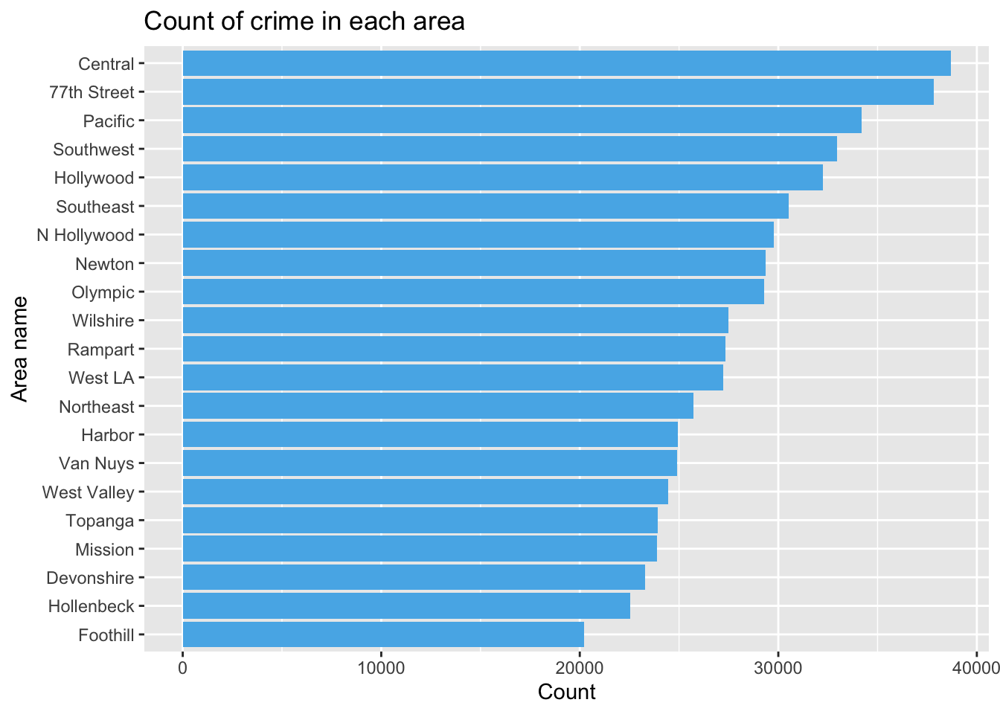

Chapter 4 Results
4.1 Count of crime in different areas

We want to create a bar chart for each area first because the question to where crime mostly happen is significant. As we can see, Central has the highest number of crime activity, followed by 77th Street, Pacific, and Southwest district. Therefore people living in these areas in Los Angeles should pay more attention to their well-being.
4.2 Bar chart for race of the victim
We want to create this bar chart showing the count for each crime victim’s race. As we can see from the bar chart, H has the highest number of count, which corresponds to Hispanic/ Latin/ Mexican. The second highest count is W, which is White, and the third highest one is B, Black.
4.3 Cleveland dot pot for the most often crime location
From the cleveland dot plot, we can tell that the most likely place that crime will take place is on the street, where a lot more crime activities in Los Angeles had taken place. The rank is followed by single family dwelling, and multi-unit dwelling such as apartment and duplex. And we can not ignore the fact that places like parking lot, sidewalk, etc. also have a high count of crime activities, there these are also places that people need to be careful around.
4.4 Bar chart for the top20 most likely commited crime
We are curious about which crime are more likely to take place so we create this graph to show the top 20 most often commited crime. From the graph, we can clearly see that stolen vehicles are among the highest possible crime that took place in Los Angeles. People in California tend to drive more often, so this increases the possibility of criminals commiting this crime. Other than stolen vehicles, the most often commited crime is followed by simple assault, burglary from vehicle, and vandalism.
4.5 Most likely age range to be a crime victim
As the graph shows, after filtering out Vict.Age is 0 (which is impossible to be a victim’s age), we can tell from the graph that there is a huge increase in the total number of crime happening to a victim at the age of 20. The number keeps growing up as age increases, and there is huge spike at age around 25 to 30. We think that the reason why this happens is because people within this age range tend to go out more often. Especially during the night, where crime is more likely to happen. Thus as the graph shows, people between 20 to 55 are more likely to become victim of crime activities.
4.6 Separate age range and observe each group
Now we separated Vict.Age into three intervals, 1-20, 21-40, and 41-100 because based on the previous plot, the graph seemed to increase a lot in count at age 20. Therefore we want to take a closer look at each age group, we can see that there is a lot less crime taken place on people younger than 20 years old, but within the age group, simple assault is the most common crime. Whereas among teenager and young adults between 21-40 years old, burglary from vehicle is most likely to happen on the victim. The reason might be teenagers and young adults tend to go out in cars more often than children and the elderly. Thus increasing the possibility of being attacked or getting robbed from a vehicle. And for middle age and elderly, simple assault is again the most likely crime to take place. Notice that burglary is ranked top 3 for this age group. The elderly are more likely to be considered as vulnerable, and therefore more likely to face burglary.
4.7 The most likely happened crime for each gender group
We created this graph because we want to see if different gender group is more likely to face different kinds of crime. As we can see, for the female gender group, they are more likely to face assault from intimate partner followed by simple assault and theft of identity. This in deed leads us to another serious problem about the safety of women at home. But for the male gender group, the most likely crime that will happen is assault with deadly weapon followed by simple assault and burglary from vehicle. Men are tend to be a little more aggressive, and therefore might be involved in an argue more often. Thus an aggravated assult is more likely to happen on men.
4.8 Theft over time
In this graph, we specifically focused on the crime ‘Vehicle-stolen’, which ranked the highest among the most likely crime to happen in Los Angeles. Here from the graph we can see that the number of vehicles stolen has increased since 2020 in general. During which was the time when COVID-19 started to spread. Everyone was experiencing a hard time, and therefore crime activities (stolen vehicles) also increased. There was a time between end of 2020 to beginning of 2021 that it did not increase dramatically (almost the same), and there is a little decrease from mid 2022, but still the number of crime has been increasing in general since 2020 till now.
4.9 Top 10 Weapons
By creating this pie chart we can easily visualize the top 10 weapons used in crime activities in Los Angeles. After eliminating the N/A recorded weapon, we can tell that the most often used weapons in crimes is “Strong-Arm” which includes hands, fist and other bodily forces. So people tend to involve in an argument or an assault where bodily forces are involved. Other than unknown weapon, the rank for weapon used is followed by verbal threat, and hand gun.
4.10 Heatmap for visualizing the frequency of crimes in each area by month
First we define a function to extract the month value of crimes from their DATE.OCC. Then use this function to create a new dataframe df_month containing the information of crime month, area of crime, and frequency.
Then, create a heatmap based on the df_month to display the severity of crime rate in different area each month.
From this heatmap we can see that first, most crime activities are focused in Central and 77th Street district. Some falls in Pacific, and a few in Southwest. Among the two most concentrated district, most crime activities happens in July, August, and October. Also, we can see that there are barely any crimes happening in December for any of the districts.